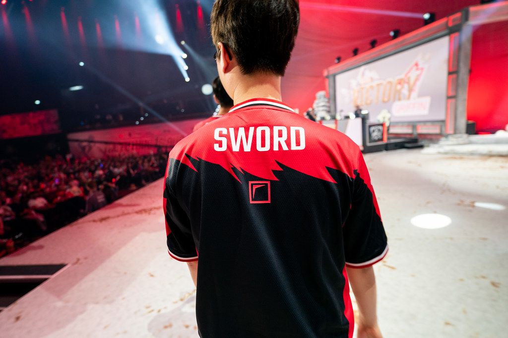
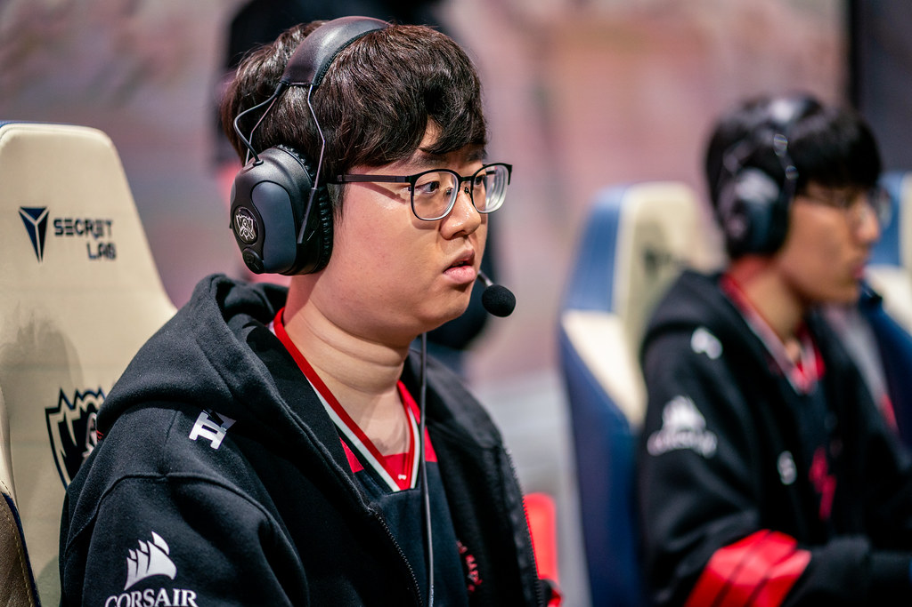

Pada laga Perempatfinal kemarin antara Griffin vs Invictus Gaming, secara mengejutkan Griffin harus menderita kekalahan 1-3 di tangan Invictus Gaming dan terpaksa memupuskan harapannya meraih gelar juara pada World Championship tahun ini.
Sebagai tim yang lebih diunggulkan untuk menang usai tampil impresif pada minggu kedua babak grup, Griffin tampil mengecewakan melawan Invictus Gaming yang bermasalah. Meskipun berhasil mendapatkan keunggulan masif, Invictus Gaming selalu berhasil membalikkan keadaan dengna menghukum kesalahan pemain Griffin.
Kekalahan ini lantas membuat penggemar Griffin di seluruh dunia merasa kecewa. Lagi-lagi untuk kelima kalinya dalam sejarah tim, Griffin gagal memenangkan pertandingan penting Best of Five (Bo5). Penampilan impresif pada minggu kedua babak grup gagal mereka tampilkan saat melawan Invictus Gaming yang sejauh ini belum tampil maksimal.
Namun penggemar Griffin paling merasa kecewa terhadap performa sang Toplaner Sword. Sword dianggap sebagai biang keladi atas kekalahan tim karena permainannya yang sangat buruk.
Sepanjang pertandingan, permainan Sword benar-benar buruk. Meskipun Ia mendapatkan matchup yang lebih unggul seperti saat memainkan Jayce melawan Kayle, Ia selalu kalah telak dari TheShy. Keunggulan tersebut membuat TheShy mampu menciptakan dampak yang besar terhadap permainan Invictus Gaming.
Tak hanya saat melawan TheShy, Sword juga sering melakukan blunder dan memiliki kontribusi yang sangat minim terhadap tim yang menyebabkan Griffin terlihat seperti bermain 4v5. Bahkan saat Griffin memenangkan game ketiga, performa Sword masih terlihat buruk.
Situasi ini membuat Sword menjadi sasaran amukan pendukung Griffin di seluruh dunia. Sword yang sebelumnya juga mendapatkan sorotan buruk karena skandal internal Griffin dan “merebut” jatah makanan subnya Doran saat bootcamp menjadi semakin dibenci oleh publik.
Berbagai kritik, sindiran, dan cemoohan keras pun dialamatkan kepada Sword di berbagai media sosial seperti Twitter, Reddit, dan forum Korea Selatan Inven. Penampilan buruk Sword dianggap tidak hanya mempermalukan rekan setimnya yang sudah berjuang keras namun juga mempermalukan pendukungnya.
Melihat masifnya amarah yang dilemparkan kepada Sword, bisa dipastikan saat Ia kembali ke Korea Selatan entah lewat jalur udara atau berenang nanti hidupnya akan tidak tenang mengingat publik Korea Selatan sangat ganas dan tidak mengenal ampun saat mengekspresikan amarahnya.
Amarah publik dan skandal ini nantinya berpotensi mempengaruhi Sword saat masa Off Season nanti jika seandainya Ia hengkang dari Griffin. Pastinya tidak ada tim yang mau merekrut pemain yang memiliki penilaian buruk dari publik karena akan mempengaruhi branding tim tersebut, khususnya bagi tim yang berada di liga franchise seperti LPL, LEC, dan LCS.